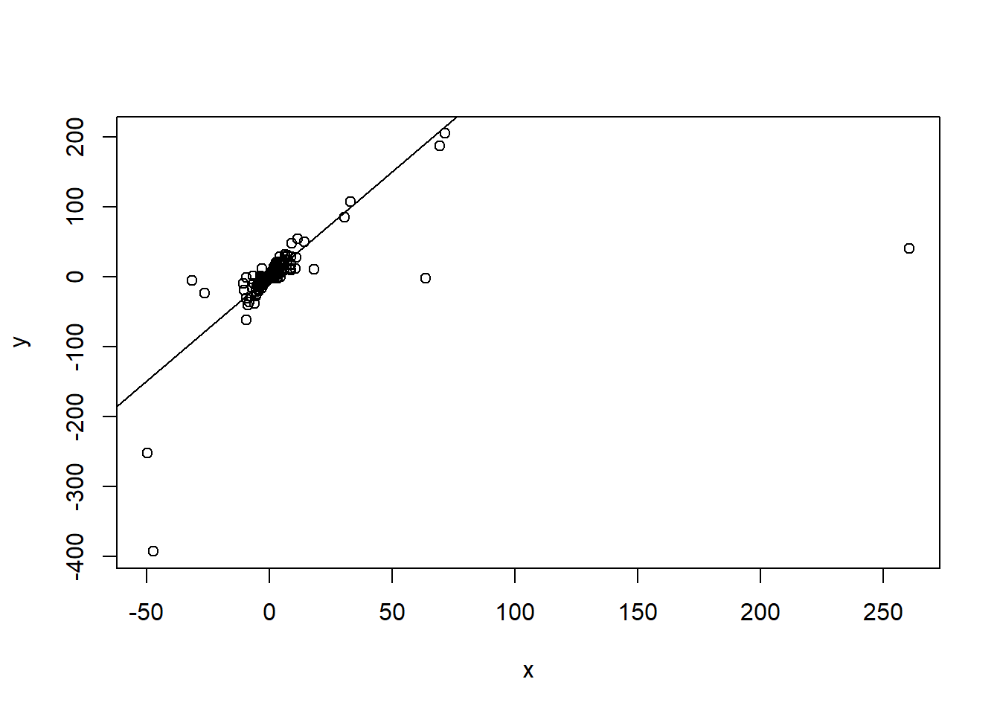

Lots of people debate about whether titer increase (log of fold change) or raw post-vaccination titer should be used as the outcome for a regression model of immunological data. Under certain generative models however, these models are essentially equivalent and we can show how.
Author
Zane Billings
Published
October 28, 2023
For a vaccine study with an immunogenicity endpoint, two commonly used outcomes are the raw post-vaccination titer, or the fold change in titers between the post-vaccination and pre-vaccination endpoint. Both provide interesting information. However, under many of the simple statistical models that are used for both outcomes, the model results are deterministically related, which I want to show here.
Generative model
First, we generate an example dataset. This dataset will have two columns, just pre-titer and post-titer with no other confounders. Here’s the population parameters. Throughout this example, I will assume all effects for the titer values occur on the log scale for simplicity. Though we could have a lot of arguments about the generative model, I specifically chose a very simple and easy to work with generative model that I think illustrates the point that I want to make.
sim_parms <-list( S <-32482304, N <-1000, alpha <-3, beta <-0.5, pre_mean <-2, pre_var <-2, error_var <-2)str(sim_parms)
List of 7
$ : num 32482304
$ : num 1000
$ : num 3
$ : num 0.5
$ : num 2
$ : num 2
$ : num 2
Now we generate the data. Even though HAI titers always have the \(\times 5\) in the formulas, I left that off here for simplicity. Since it’s a constant multiplier it doesn’t affect what’s going on here.
The relationship between titer increase and pretiter is also completely determined by this linear model. For the specific set of parameters I chose for the simulation, we see a negative effect of pre-titer on titer increase (which we think is true in real life), but with this generative model, this is entirely dependent on the value of \(\beta\). Because I set a value of \(\beta\) which is in \((0, 1)\), we observe a positive correlation between pre and post- titer, and a negative correlation between pre-titer and titer increase. We will see why shortly.
We can derive the regression line for the case where the titer increase is the outcome of interest.
\[
\begin{aligned}
\log_2(\text{post}) &= \alpha + \beta \cdot \log_2(\text{pre}) \\
\log_2(\text{post}) - \log_2(\text{pre}) &= \alpha + \beta \cdot \log_2(\text{pre}) - \log_2(\text{pre})\\
\text{titer increase} &= \alpha + (\beta - 1) \cdot \log_2 (\text{pre})
\end{aligned}
\] That is, we can include the negative pre-titer as an offset term in the linear model for titer increase to recover the same coefficients as we would in the model for post-titer. This is why we got the specific qualitative behavior we observed earlier.
Note that a regression offset is a term that is included on the right-hand side of a linear model, but the coefficient is pre-specified as 1, and not estimated as part of the model fit.
mod1 <-lm(log_post ~ log_pre, data = sim_dat)mod2 <-lm(TI ~ log_pre, data = sim_dat)mod3 <-lm(TI ~ log_pre, data = sim_dat, offset = (-1* log_pre))
Here we can see that model 1 and model 3 recover the parameters from the generative model, while if we fit model 2, we get a biased coefficient that is exactly equal to 1 minus the estimated parameter from the other two models. So while both models produce a “correct” inference, we need to be aware why the models are different.
Note that adding linear confounders will not change what happens here. For example, we could add \(\beta_2 \cdot \mathrm{age}\) into our generative model and our regression models, and we would see the same pattern. However, if we incorporate nonlinearity (e.g. interaction effects or hierarchical effects), understanding how the models are related might not be that simple to solve, because in those cases we can’t necessarily combine the offset term with something else to simplify the model.
Other outcomes
If we were to construct an outcome that is not linear in the pre-titer value, this equivalence would no longer hold. For example, if instead of using the log fold change as the outcome, we instead used
\[y = \frac{\log_2 (\text{post})}{\log_2 (\text{pre})},\] the models are no longer equivalent in this way. This model is not commonly used because the ratio of the logarithms is not as easily interpreted as the log fold change, but we could do that if we wanted. If we fit a model with that outcome we would get \[
\begin{aligned}
\frac{\log_2 (\text{post})}{\log_2 (\text{pre})} &=
\frac{\alpha + \beta\cdot\log_2 (\text{pre})}{\log_2 (\text{pre})} \\
&=\beta + \alpha\frac{1}{\log_2 (\text{pre})}.
\end{aligned}
\]
# A tibble: 2 × 4
model `(Intercept)` `sim_dat$log_pre` x
<chr> <dbl> <dbl> <dbl>
1 mod4 1.30 0.177 NA
2 mod5 0.899 NA 0.916
Uh-oh, those aren’t the numbers I said we should get! Actually, a major problem with this model is that those transformations kind of wreck our numeric precision. If we plot the transformed data, we can see that regression line still passes through the middle of the data really well, we just get some crazy points that ruin our ability to estimate this with a plain linear regression model.
plot(x, y)abline(a = beta, b = alpha)

So I guess that’s probably another reason this outcome doesn’t get used much.
@online{billings2023,
author = {Billings, Zane},
title = {Increase Vs Post Titer as Regression Outcome},
date = {2023-10-28},
url = {https://wzbillings.com/posts/2023-10-28_TI-vs-Post-Regression/},
langid = {en}
}